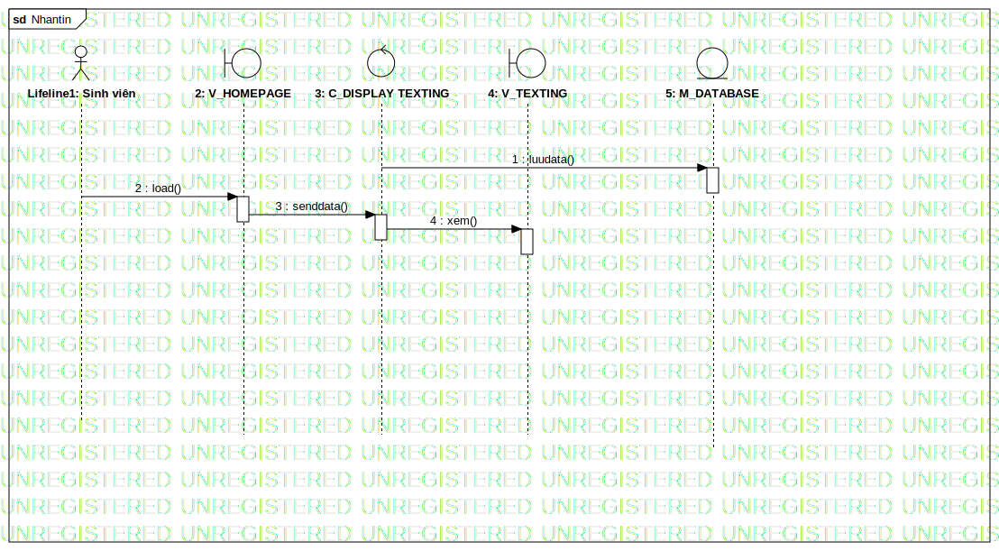

Seq_nhantin
UMLInteraction
Tuong tac UTE
::
Sequence Model
::
Sequence
::
Seq_nhantin
Description
none
Diagrams

Nhantin
Participants
Lifeline1: Sinh viên
2: V_HOMEPAGE
3: C_DISPLAY TEXTING
4: V_TEXTING
5: M_DATABASE
Messages
luudata() (3→5)
load() (Lifeline1→2)
senddata() (2→3)
xem() (3→4)
Properties
Name
Value
name
Seq_nhantin
stereotype
null
visibility
public
isReentrant
true
Owned Elements
Nhantin